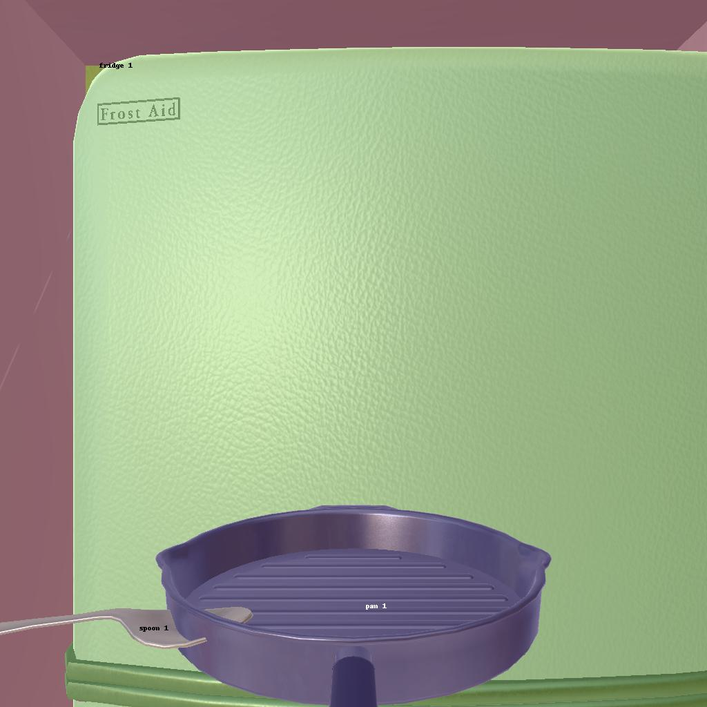

---------------------------------------------------------task: 16---------------------------------------------------------
--------------------------------------------------------------------------------------------------------------------------------------------------------------------
--------------------------------------------------------------------------------------------------------------------------------------------------------------------
Step:--------------------------------------------------------------------------13-------------------------------------------------------------------------------
----------------------------------------
VLM Prompt:
Image1:
Image2:
**Instruction**
1. Analyze the provided image to identify all visible household objects, focusing on those relevant to the task description "put a cool pan in sinkbasin."
2. Use the analysis of the image and the task hint "The agent must find an object of the desired type, pick it up, go to a fridge, cool the object with the fridge, then find the correct location to place it, and put it down there. The agent does not need to use the fridge button or open the fridge to cool the object, and the agent just needs to do action that is "cool the object with the fridge"." to answer the question: what is the most reasonable action in the choices for the task description "put a cool pan in sinkbasin"?
4. Decide and write the answer using the template: The answer is: (i): , where i is the real number. If there is no desired object in the image, search every place based on **Initial Observation** to find the object. And if no one is exactly correct, choose a similar answer.
**Initial Observation**
You are in the middle of a room. Looking quickly around you, you can see cabinet (1-9), countertop (1-3), drawer (1-9), stoveburner (1-4), microwave (1), sink (1), fridge (1), toaster (1), coffeemachine (1), sinkbasin (1), shelf (1-3), garbagecan (1)
**Answer Choices**
(1): go to cabinet 1
(2): go to countertop 1
(3): go to cabinet 2
(4): go to countertop 2
(5): go to drawer 1
(6): go to drawer 2
(7): go to drawer 3
(8): go to drawer 4
(9): go to stoveburner 1
(10): go to drawer 5
(11): go to stoveburner 2
(12): go to stoveburner 3
(13): go to stoveburner 4
(14): go to cabinet 3
(15): go to cabinet 4
(16): go to microwave 1
(17): go to cabinet 5
(18): go to cabinet 6
(19): go to cabinet 7
(20): go to sink 1
(21): go to toaster 1
(22): go to coffeemachine 1
(23): go to cabinet 8
(24): go to drawer 6
(25): go to drawer 7
(26): go to drawer 8
(27): go to sinkbasin 1
(28): go to shelf 1
(29): go to shelf 2
(30): go to countertop 3
(31): go to shelf 3
(32): go to drawer 9
(33): go to cabinet 9
(34): go to garbagecan 1
(35): open fridge 1
(36): close fridge 1
(37): examine pan 1
(38): examine fridge 1
**Answer**
Let's think step by step by following the instructions.
----------------------------------------
----------------------------------------
Original Response:
The task description is "put a cool pan in sinkbasin." To accomplish this, the agent must first locate a pan, then cool it with the fridge, and finally place it in the sinkbasin.
From the provided image, we can see a pan labeled "pan 1" on the countertop. Therefore, the agent does not need to search for a pan in cabinets or drawers since it is already visible in the image.
According to the task hint, the agent does not need to use the fridge button or open the fridge to cool the object. The action to be performed is "cool the object with the fridge." So, the agent needs to go to the fridge to cool the pan.
After cooling the pan, the agent must find the sinkbasin to place the cooled pan in it. From the initial observation, we know there is a sinkbasin (1) in the room.
The most reasonable action from the choices provided, considering the task of cooling the pan and then putting it in the sinkbasin, would be to first cool the pan with the fridge and then go to the sinkbasin. Since the image already shows the pan, and there's no action to "cool the pan with the fridge" explicitly mentioned, the next logical step is to go to the sinkbasin to complete the task.
The answer is: (27): go to sinkbasin 1.
----------------------------------------
----------------------------------------
>>> Refine Original VLM Response and Get Pure Action: go to sinkbasin 1
----------------------------------------
-----------------------------------------------------------------
Running time: 22.662824153900146 seconds
Total Money: 7.802720000000001
-----------------------------------------------------------------
-----------------------------------------------------------------
Text Observation:You arrive at loc 27. On the sinkbasin 1, you see a spoon 1, a vase 2, a faucet 1, and a knife 1.
-----------------------------------------------------------------
UNSUCCEED